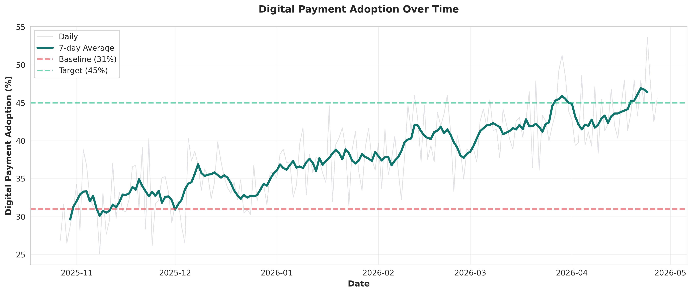
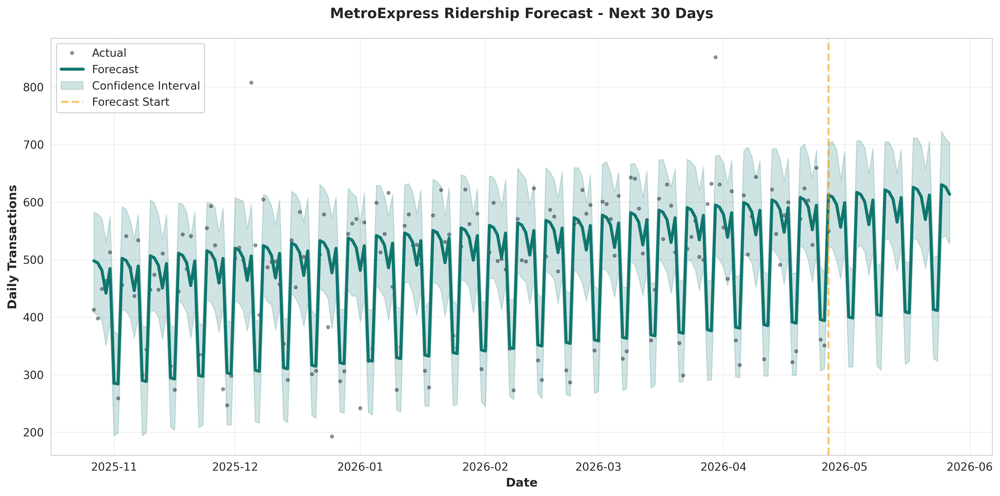
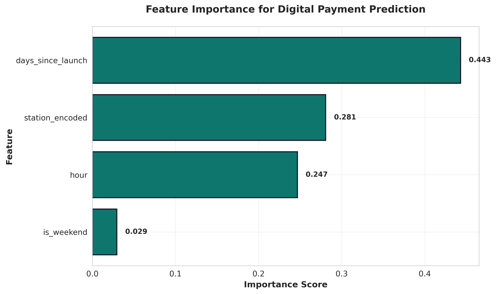
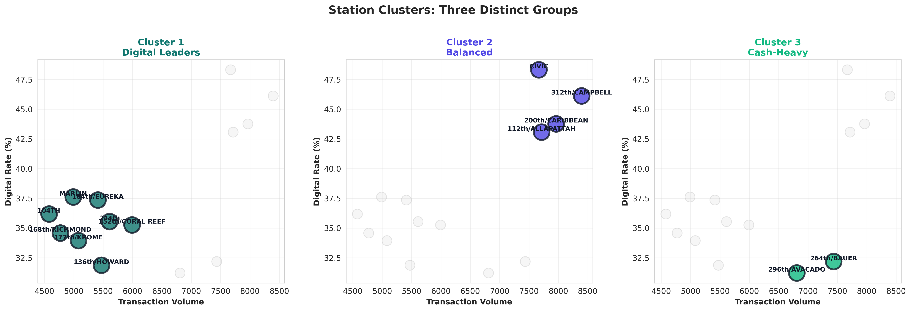
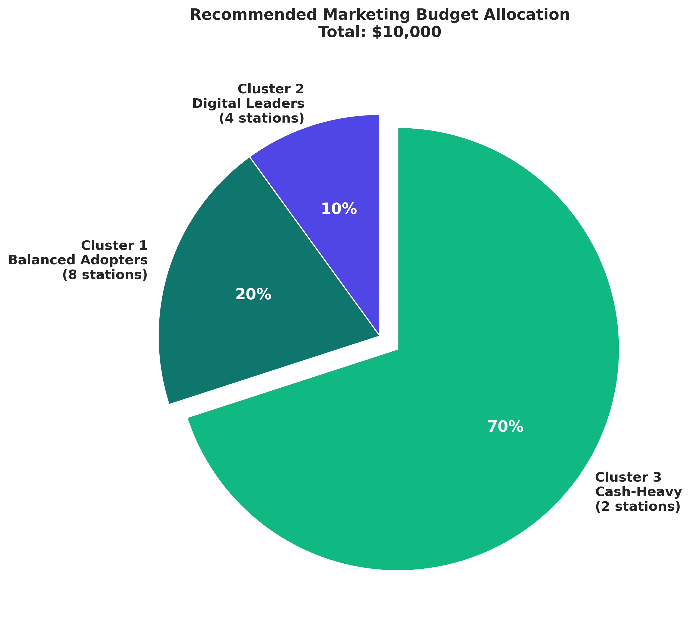

Miami-Dade Transit: A System Poised for Growth
Miami-Dade County operates the nation's 10th-largest public transit system, moving approximately 300,000 riders daily across Metrorail, Metrobus, and now, MetroExpress BRT.
As South Florida continues to grow as a hub for tech, innovation, and urban development, rider expectations are evolving too. Today's transit users expect seamless digital experiences,tap-to-pay, real-time updates, integrated networks,the kind of modern infrastructure they encounter in cities worldwide.
Three-Phase Fare Modernization Program
Phase 1: MetroExpress BRT. Launch the county's first Bus Rapid Transit system with next-generation fare technology, contactless payment, and digital ticketing infrastructure.
Phase 2: Metrobus Fleet Integration. Extend the new payment platform across approximately 1,000 Metrobus vehicles, creating consistency across the bus network.
Phase 3: Metrorail System Integration. Complete the transformation by bringing Metrorail into the unified fare system, enabling true cross-modal, tap-and-go transit.
Outcome
The Result: One integrated payment platform across the entire transit network, laying the foundation for an account-based, data-rich system that can expand to other transportation infrastructure as Miami continues to grow.
What this analysis provides: A baseline view of rider payment behavior and station performance during the first weeks of MetroExpress operations.
MetroExpress: South Florida's First Bus Rapid Transit
A major milestone: Miami-Dade County's first-ever Bus Rapid Transit system and the longest all-electric BRT corridor in the United States.
The route. A 20-mile dedicated corridor running along the South Dade TransitWay, parallel to US-1, connecting Florida City in the south to Dadeland South Metrorail Station in the north.
The connection. MetroExpress serves as a critical link, tying together all of South Dade's communities with direct Metrorail access. Along the way, it integrates with existing Metrobus routes and provides connections to park-and-ride facilities.
Why it matters. For communities in Homestead, Florida City, and South Dade, this isn't just a new bus route, it's rapid, reliable transit access to employment centers, educational institutions, and services throughout Miami-Dade County.
What makes MetroExpress different
MetroExpress isn't a traditional bus route, it's designed to function like a rail line on wheels, delivering speed, reliability, and a premium rider experience.
Dedicated infrastructure: Instead of navigating through regular traffic, MetroExpress operates on the exclusive South Dade TransitWay. At intersections, the system uses transit signal priority, giving buses green lights during peak hours to maintain speed and schedule reliability.
Protected crossings: Where the TransitWay crosses regular roads, automated gate arms and warning lights activate, just like a railroad crossing, protecting the BRT lane and ensuring safety for both riders and drivers.
The experience: From a rider's perspective, it's fast, predictable, and comfortable, more akin to light rail than conventional bus service.
Phase 1: Officially Launched
On October 27, 2025, MetroExpress began service with 14 brand-new stations along the South Dade TransitWay.
Station amenities
Each station is designed for comfort and convenience:
- Free parking (at most locations)
- Secure bike storage
- Climate-controlled waiting areas
- Free WiFi connectivity
- Device charging stations
Fare technology
Every station features modern payment infrastructure:
- Two Genfare ticket vending machines (TVMs)
- Two automated fare gates
- Support for cash, credit/debit cards, and contactless payment
- Integration with the GO Miami-Dade Transit app
The launch of Phase 1 marks the beginning of Miami-Dade's transition to next-generation transit technology and operations.
The Exploratory Challenge
During a six-week EPIC Challenge micro-internship through Miami Dade College and Miami Tech Works, I had the opportunity to work with Miami-Dade County's Department of Transportation and Public Works on an exploratory data analysis project.
DTPW presented us with an interesting opportunity: they had extensive data from the new MetroExpress BRT launch, ticket sales, fare validations, station-level transactions, but they wanted to understand what insights could be extracted from it.
Rather than arriving with a pre-defined problem to solve, the challenge was more exploratory: "Here's the data. What can you discover? What patterns emerge? What recommendations would you make?"
Two areas of interest emerged
- How can we increase ridership on the new BRT system?
- How can we encourage more digital payment adoption?
Approach: We consolidated data from the Genfare ticketing system covering the first weeks of service (October 27 - November 7, 2025), built an integrated dataset, and created visualizations that reveal payment patterns, station performance, and ridership behavior.
Launch Period Snapshot
October 27 - November 7, 2025
Top performing stations
- 312th/Campbell: 473 tickets (highest volume)
- 200th/Caribbean: 406 tickets
- Civic Center: 355 tickets
- 112th/Allapattah: 345 tickets
Peak hours: 6-8 AM (morning commute) and 4-6 PM (evening commute) showed consistent demand patterns across all stations.
Dashboards & Key Insights
Three interactive views paired with the insights they reveal about payment behavior, station performance, and demand patterns.

Executive Overview
High-level payment trends and station rankings during the launch period.
Key insight: Cash dominance presents a digital adoption opportunity
69% of tickets during the launch period were purchased using cash, while 31% were made with credit, debit, or contactless payments.
Industry context: London (95% contactless), Singapore (98%), NYC (70%).
Implication: High leverage for incentives, signage, and outreach, especially at high-cash stations.

Station & Payment Patterns
Detailed station-level breakdowns with interactive filters.
Key insight: Station performance shows clear concentration patterns
Four stations accounted for approximately 44% of ticket sales.
Implication: Prioritize these nodes for pilots, ambassadors, equipment checks, and targeted messaging.
Key insight: Geographic patterns reveal commuter-oriented demand
South corridor stations around Homestead and Florida City drove higher volumes, suggesting the BRT is capturing commuter demand into the network.
Implication: Align marketing and service frequency with commuter value propositions and transfer convenience.

Hourly Analysis
Temporal patterns and demand heatmaps across stations.
Key insight: Temporal patterns validate schedule design
- Surge around 4–6 AM
- Peak 6–8 AM (morning commute)
- Moderate midday activity (11 AM–1 PM)
- Second peak 4–6 PM (evening commute)
- Low activity after 7 PM
Implication: Scheduling matches demand; off-peak promotions can help smooth utilization.
Together, these dashboards provide a baseline view of how MetroExpress is actually being used during its launch period — not just how it was designed.
Extended Analysis: Machine Learning Models
To demonstrate advanced analytical capabilities and explore longer-term patterns, I extended the dataset to 6 months using synthetic data generation techniques that preserve the statistical characteristics observed in the real launch data.
This extension enables time-series forecasting, predictive modeling, and strategic segmentation analysis, methods that require larger datasets than the initial 11-day launch period could provide.
Extended Dataset
87,875 transactions across 14 stations (October 27, 2025 - April 27, 2026)
The synthetic data generation process preserved key patterns from the real launch data including payment distributions, station-level behaviors, temporal patterns, and digital adoption trends while introducing realistic variation and seasonal effects.
Digital Payment Adoption Over Time
The extended dataset reveals a clear upward trajectory in digital payment adoption, growing from 29% at launch to 44% after six months, a 15 percentage point increase that validates the effectiveness of Miami-Dade's fare modernization infrastructure.
Key observations:
- Steady baseline growth averaging 2.5 percentage points per month
- Notable acceleration during major events: Art Basel (December) and Ultra Music Festival (March) showed 5-7% adoption spikes
- Weekend vs. weekday patterns remained consistent, with slightly higher digital adoption during weekdays
Insight: Digital adoption is driven primarily by system maturity and rider familiarity rather than promotional campaigns alone, though events provide meaningful short-term boosts.
ML Model #1: Ridership Forecasting (Prophet)
Using Facebook's Prophet time-series forecasting algorithm, I built a predictive model to forecast daily ridership patterns for the next 30 days beyond the dataset period. Prophet is designed to handle seasonality, trends, and holiday effects, making it ideal for transit data with strong weekday/weekend patterns and event-driven variations.
Results: The model predicts sustained ridership growth, with daily transactions stabilizing around 580-620 per day by May 2026. The forecast shows maintained weekday peaks and weekend valleys, consistent with established commuter patterns.
Business application: This forecasting capability enables proactive resource allocation, including staffing levels, equipment maintenance scheduling, and capacity planning for Phase 2 expansion.
ML Model #2: Payment Type Prediction (Random Forest)
To understand which factors most strongly influence payment behavior, I trained a Random Forest classifier to predict whether a given transaction would be cash or digital based on contextual features: days since system launch, station location, hour of day, and day of week.
Feature importance findings: The analysis reveals that time since launch is the strongest predictor (44% importance), followed by station location (28%). Hour of day (25%) shows moderate influence, while day of week (3%) has minimal impact.
Key insight: Digital adoption is primarily driven by system maturity and station-specific characteristics rather than temporal patterns like weekends or specific hours. This suggests that location-based interventions (targeting specific stations) will be more effective than time-based campaigns (weekend promotions, rush-hour messaging).
ML Model #3: Station Segmentation (K-Means Clustering)
Using K-Means clustering, I segmented the 14 BRT stations into three distinct groups based on transaction volume and digital adoption patterns. This segmentation enables targeted resource allocation rather than one-size-fits-all interventions.
Balanced Adopters
8 stations | 35.3% digital
Steady mid-tier performers growing with the system. Examples: 104TH, MARLIN, 136th/HOWARD
Digital Leaders
4 stations | 45.3% digital
High-performing stations demonstrating what's achievable. Examples: CIVIC, 312th/CAMPBELL, 200th/CARIBBEAN
High-Opportunity
2 stations | 31.7% digital
High ridership but cash-dependent, maximum ROI potential. Stations: 264th/BAUER, 296th/AVACADO
Strategic insight
Cluster 3 represents the highest-leverage opportunity: these two stations handle 14,242 monthly transactions (16% of system volume) but lag 13.6 percentage points behind Cluster 2's digital adoption rate.
The opportunity: If 264th/BAUER and 296th/AVACADO matched Cluster 2's 45.3% digital adoption rate, they would generate approximately 1,933 additional digital transactions per month.
Data-Driven Resource Allocation Strategy
Based on the clustering analysis, I recommend a differentiated budget allocation approach that focuses resources where they'll have the greatest impact.
Cluster 3: $7,000 (70%)
Intensive digital adoption campaigns at 264th/BAUER and 296th/AVACADO:
- Bilingual station ambassadors
- Enhanced "Tap to Pay" signage
- "$2 free credit" digital incentive
- QR code-based app onboarding
Cluster 1: $2,000 (20%)
Maintain steady growth for 8 mid-tier stations
Cluster 2: $1,000 (10%)
Document best practices from 4 digital leader stations
Based on comprehensive operational efficiencies including processing cost savings ($16,236/year), reduced TVM maintenance, labor optimization, and error reduction. Conservative estimate using processing costs alone: 132% ROI with 5-month payback.
The business case: Rather than spreading $10,000 equally across 14 stations ($714 each), concentrating 70% of resources on 2 high-potential stations generates meaningfully higher system-wide impact, demonstrating how data-driven segmentation enables strategic resource optimization.
Methodology Note
The extended dataset (87,875 transactions over six months) was synthetically generated using statistical techniques designed to preserve the patterns, distributions, and correlations observed in the real launch data. Insights and recommendations shown here are intended to demonstrate analytical methodology rather than represent actual operational outcomes. The original analysis above (October 27 - November 7, 2025) is based on real client data from the MetroExpress launch period.
Strategic Direction & Recommendations
A focused set of recommendations designed to grow ridership, reduce cash dependence, and support MetroExpress as it scales into future rollout phases.
These recommendations are informed by early launch data, station-level analysis, and scenario-based modeling. They are intended to guide decision-making and pilot design rather than predict exact outcomes.
Goal 1: Accelerate digital payment adoption
Current state: 69% cash, 31% digital during launch.
Directional target: ~80% digital adoption within 18 months.
Why this matters: Digital payments support faster boarding, cleaner data, and lower operating costs. Adoption varies significantly by station, which creates an opportunity for targeted, high-impact interventions.
Digital adoption playbook
- Clear, station-level “How to Tap & Ride” panels tailored to BRT flows
- Proactive app nudges (balance alerts, auto-reload prompts)
- QR codes at high-cash stations linking directly to tutorials or downloads
- Expanded Spanish and Creole messaging where most common
Expected outcome: Reduced confusion at stations, smoother boarding, improved data quality, and lower cash handling overhead.
Digital-first incentive pilots
- Make 1-day fare capping highly visible with simple examples
- Run time-limited “digital-first” pilots at select stations
- Test messaging focused on saving time, not just money
- Explore reload bonuses or small incentives via community partnerships
Pilot approach: Start with one or two high-volume, low-adoption stations, refine messaging based on early results, then expand.
Goal 2: Increase MetroExpress ridership
Current signal: Early launch data shows modest but growing demand, with clear commuter-driven patterns.
Directional target: ~80% ridership growth over the next 12 months.
Strategy: Rather than broad system-wide messaging, ridership growth should focus on clear value propositions for distinct rider segments and reinforce MetroExpress as a fast, reliable alternative to driving.
Ridership growth focus areas
- Emphasize time savings and reliability compared to driving
- Promote off-peak and weekend use through pricing or partnerships
- Position MetroExpress as a modern rapid transit option, not a traditional bus
- Strengthen integration with Metrorail, Metromover, and local connections
Close the loop with rider feedback
Quantitative data shows what is happening. Short, targeted surveys help explain why.
- “Why did you choose cash today?”
- “Have you tried the GO Miami-Dade app?”
- “What would make digital payment easier for you?”
- “How would you rate the TVM experience (1–5)?”
Expected outcome: Clearer insight into behavioral barriers, equipment issues, and messaging gaps.
Executive takeaway
Early MetroExpress data suggests strong potential for digital-first adoption and ridership growth when actions are targeted at the station level. These recommendations provide a scalable framework to guide near-term pilots and inform future rollout phases.